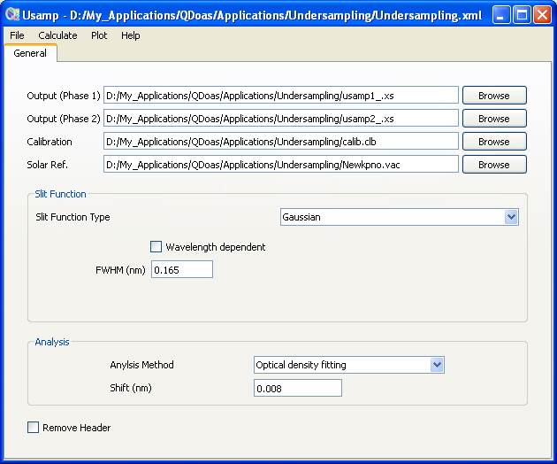
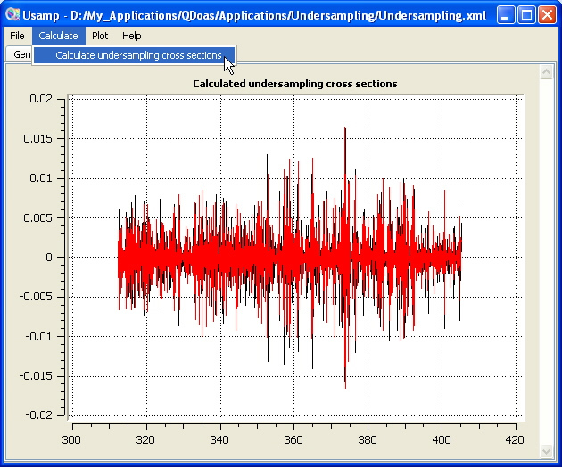

QDOAS Undersampling Tool (usamp)
The undersampling is a well-known problem of GOME onboard the satellite ERS-2. It arises from the poor sampling ratio of the GOME instrument (2 to 3 pixels/FWHM of the resolution of the spectrometer) which results in a lost of spectral information when interpolating earthshine spectra during the DOAS fitting process. The problem can be corrected using ad-hoc cross-sections obtained by simulating the effect from a high-resolution solar reference [Chance K., 1998].
The approach consists in building two spectra (an oversampled one and an undersampled one) from the high resolution solar spectrum and according to the selected analysis method, to calculate the ratio (DOAS fitting) or the difference (Intensity fitting) in order to simulate the interpolation error. Two undersampling cross-sections are generated (the first one using the instrument grid and the second one using the instrument grid with a small shift applied).
See the Description of Algorithms part of the QDOAS Software User Manual for further information on the undersampling.
Example of configuration of the undersampling tool
 |
 |
QDOAS requires :
-
the final grid on which the undersampling cross-sections must be calculated
-
a high-resolution solar spectrum;
-
the slit function to use for the convolution : user-defined slit functions and analytical line shapes (Gaussian, Lorentzian, Voigt and error functions) are accepted. The wavelength dependency of the line shape (Gaussian or error function) characterized by the wavelength calibration procedure can be saved from the plot page in order to be accounted for the convolution.
- the shift to apply to oversampled and undersampled spectra in the calculation of undersampling;
- the analysis method that determines the relation between oversampled and undersampled spectra;
Two undersampling cross-sections are generated by the procedure. It is recommended to give the name of the output files in the format imposed by QDOAS : cross-section files names must imperatively start with the symbol name as prefix followed by the underscore character !